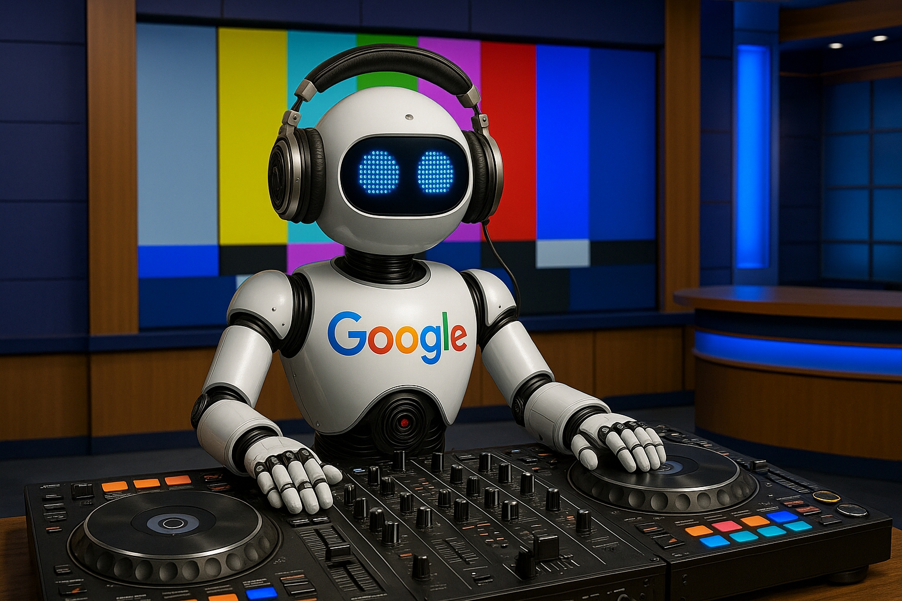

Bem-vindo ao Curso do Tradutor!

Este curso ensina passo a passo como usar programas como Balabolka e Soundpad para se comunicar em jogos online usando uma voz de computador (voz sintetizada), em vez de falar pelo microfone. Essa solução é ideal para quem não tem microfone, tem dificuldade para falar, sente vergonha de conversar com outras pessoas (fobia social), faz parte do público neurodiverso, ou simplesmente prefere manter sua privacidade. Também é muito útil para criadores de conteúdo e streamers que querem adicionar efeitos sonoros ou vozes diferentes às suas transmissões.
Você vai aprender como configurar tudo do zero, inclusive como automatizar tarefas usando scripts e macros. Por exemplo: será possível baixar áudios e músicas de sites como MyInstants e YouTube com apenas um clique, sem precisar sair do jogo. O curso mostra como esses sons podem ser enviados automaticamente para o Soundpad, um programa que permite reproduzir esses áudios com atalhos do teclado, como se fossem efeitos especiais durante a partida.
Mesmo que você nunca tenha usado essas ferramentas antes, o curso explica cada etapa de forma clara e prática, com exemplos e dicas para você personalizar sua experiência e deixar suas partidas ou transmissões muito mais interativas e divertidas.
O que você vai aprender
Pré-requisitos
Este curso é gratuito mas você pode apoiar seu criador, o canal Tradutor Competitivo, fazendo uma doação através do QR Code abaixo ou no link livepix.gg/tradutor com qualquer valor a partir de 1 real.
OBS: QR Code acima não é uma chave pix, mas um link pra abrir o site LIVEPIX aonde você pode escolher o valor e mensagem para enviar.
Termos de Uso
Bem-vindo(a) ao Curso de Áudios Automatizados do Tradutor Competitivo! Este documento explica, de forma simples, as regras de uso deste curso gratuito. Leia com atenção antes de começar.
1. O que é este curso
É um curso gratuito, feito pelo canal Tradutor Competitivo para ensinar os inscritos e seguidores do canal. Ele não é vendido nem é um produto comercial — existe graças às doações voluntárias da comunidade.
2. O curso é gratuito
- Ninguém deveria ter cobrado de você por este curso. Se isso aconteceu, peça seu dinheiro de volta a quem cobrou — não foi autorizado pelo canal.
- Ele existe graças às doações de quem apoia o canal, o que ajuda a cobrir os custos de criação e mantém o acesso gratuito para todos.
3. Sem garantias e sem suporte
- Use por sua conta e risco: o conteúdo é entregue "como está", sem garantia de que vai funcionar perfeitamente no seu computador ou situação.
- Sem suporte oficial: não há atendimento dedicado para tirar dúvidas. Se tiver problemas, procure ajuda na comunidade do canal ou por conta própria.
- Riscos são seus: erros no material, incompatibilidades com seu sistema, ou programas que parem de funcionar por atualizações são riscos que você assume ao seguir o curso.
4. Responsabilidade
O criador do curso não se responsabiliza por:
- Erros de digitação ou imprecisões no conteúdo;
- Programas ou scripts que parem de funcionar por atualizações do Windows, de jogos ou de softwares de terceiros;
- O curso não ser atualizado toda vez que algo mudar;
- Qualquer dano, perda de dados ou prejuízo causado pelo uso (ou tentativa de uso) do conteúdo.
5. Use com responsabilidade
- Não repasse o acesso: o curso é só para os seguidores do canal — não vale vender, redistribuir ou compartilhar sem autorização.
- É só para aprender: o conteúdo é educacional. Não recomendamos usar essas técnicas em situações críticas ou comerciais sem testar e adaptar por conta própria antes.
- Siga a lei: use os softwares e técnicas do curso de acordo com as leis do seu país. Qualquer uso indevido é de sua responsabilidade.
6. Direitos autorais
Todo o conteúdo do curso (textos, vídeos, imagens e scripts) pertence ao canal Tradutor Competitivo ou a terceiros licenciados. Você pode usar o material para aprender, mas não pode reproduzi-lo, redistribuí-lo ou modificá-lo sem autorização.
7. Estes termos podem mudar
Podemos atualizar estes termos quando o curso mudar ou quando for necessário. Ao continuar usando o curso depois de uma atualização, você concorda com os novos termos.
8. Dúvidas
Não temos um canal de suporte dedicado, mas você pode buscar ajuda nos vídeos, posts e na comunidade do canal Tradutor Competitivo.
9. Para terminar
Este curso é um presente da nossa comunidade para você. Ao usá-lo, você entende que faz por sua conta e risco — e também faz parte de uma comunidade que valoriza aprender e compartilhar conhecimento. Obrigado por fazer parte do canal Tradutor Competitivo!